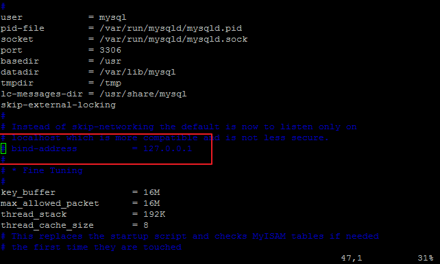
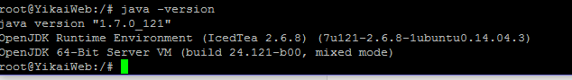
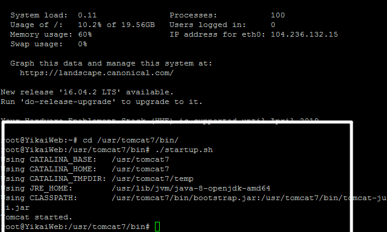

填坑填坑！！
新手爬坑记录。谨防下次踩同样的坑！！！
此博客适用于本人垃圾电脑….在各种巧合之下，莫名其妙弄好了。。
仅限个人理解，望指教~
首先说安装MySQL
1 | apt-get install mysql-server |
安装两个东西就好了~网上博客会让安装 apt-get install libmysqlclient-dev，这只菜鸡暂时不知道为什么要安装，不过安装好server和client，mysql已经能用了。
1 | mysql -u root -p |
输入密码之后，进入mysql界面。
此外，在服务器上安装MySQL，在本地开发的话，此时就会遇到在本地不能连接服务器数据库的情况，这是因为服务器MySQL禁止了远程访问。
1 | vim /etc/mysql/my.cnf |

将上图那一行注释掉，大概这行的意思是只让IP为127.0.0.1的用户可以访问吧（个人理解）
再进入mysql，为数据库授权。数据库有一个root用户，密码是123456
1 | GRANT ALL PRIVILEGES ON *.* TO 'root'@'%' IDENTIFIED BY '123456' WITH GRANT OPTION; |
意思解释：
GRANT ALL PRIVILEGES：授权所有权限
*.* 所有数据库的所有表（如要授权A数据库的B表，就写A.B）
‘root’@‘%’ IDENTIFIED BY ‘123456’：密码为‘123456’，用户名为‘root’的用户
最后重启MySQL使授权生效
1 | ./etc/init.d/mysql restart |
jdk7环境下tomcat7
安装jdk
1 | apt-get update |
安装完了
1 | java -version |
可以看到java版本

安装tomcat7
1 | apt-get update |
安装完成后，本地：浏览器进入 localhost:8080，服务器：浏览器进入 IP地址:8080
可以看到如下状况：

安装完成~
jdk8环境下tomcat7
安装jdk8
在Ubuntu自带的
1 | apt-cache search jdk |
中，搜不到jdk8…..
寻找网上方法~
1 | add-apt-repository ppa:openjdk-r/ppa |
安装完jdk8之后~
我用apt-get安装的tomcat7，启动时找不到jdk路径….
于是我下载的压缩包，解压安装~下载完成后，直接解压就好~进入bin文件夹
1 | ./startup.sh |

找不到路径，可参考http://zyjustin9.iteye.com/blog/2177291中，修改catalina.sh的方法~本人没试过